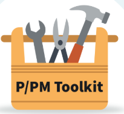

Acquisition workforce (AWF) professionals perform a vital role in an evolving acquisition ecosystem. As such, AWF professionals must maintain a current knowledge base, develop critical thinking abilities, have an awareness of innovations and leading-edge technologies to achieve successful acquisition outcomes.
OFPP Acquisition Flash 22-01- Continuous Learning Requirement Effective May 01, 2022
FY2022 OFPP Acquisition Flash 22-01: Continuous Learning (CL) Requirements
FY2020 OFPP Acquisition Flash 20-02: Additional Training and Development Options to Consider in FY 2020
FY2020 OFPP Acquisition Flash 20-01: Recommended Training and Development for FAC-C, FAC-COR and FAC-P/PM Holders
CL Policy Requirements
In accordance with OFPP Acquisition Flash 22-01, acquisition workforce professionals holding a FAC-C, FAC-COR, or FAC-P/PM certification are required to obtain the required continuous learning points within the two-year common continuous learning period, which began May 1, 2022. Learn more about Federal Acquisition Institute certifications.
Continuous Learning Points Requirements
Certification
| FAC C |
FAC COR |
FAC-P/PM |
|---|
- Level I: 80 CLPs
- Level II: 80 CLPs
- Level III: 80 CLPs
|
- Level I: 8 CLPs
- Level II: 40 CLPs
- Level III: 40 CLPs
|
- Level I: 80 CLPs
- Level II: 80 CLPs
- Level III: 80 CLPs
|
FAC-C-Digital Services ( FAC-C-DS) holders: 20 of the 80 mandatory CLPs must be achieved by “acquiring enhanced digital services“ knowledge
FAC-P/PM Information Technology ( FAC-P/PM-IT, see Attachment 4) holders: 20 of the 80 mandatory CLPs must be achieved by topics associated with the IT core-plus area.
OFPP Guidance on Meeting the Requirement for Continuous Learning Points (CLPs) which includes the types of activities to obtain CLPs and the amount of CLPs for each type of activity.
Training is just one means of achieving CLPs. Numerous acquisition-related learning activities are now accessible, designed to help AWF professionals stay up to date on new policies, processes, and technical and professional capabilities.
Continuous Learning Sample Activities
| OJT Experiential Learning Opportunities = 1 CLP per hour of activity; maximum 20 CLPs per year |
Coaching and Mentoring = 1 CLP per hour of activity; maximum 20 CLPs per year> |
Try an innovative technique in your upcoming acquisition = Up to 3 CLPs |
Open Opportunities - short term experiential project ( https://openopps.usajobs.gov/ ) = 1 CLP per hour of activity |
| Formal or Informal Training (such as FAI/DAU classroom or online courses) = 1 CLP per hour of instruction |
Accredited Higher Education Courses (college courses) = Generally, 10 CLPs per semester or quarter hour |
Continuing Education Unit (CEU) = 10 CLPs per CEU |
Equivalency Exam = Same points as awarded for the course |
| Conferences, Seminars and training presentations = 1 CLP per hour, including preparation; maximum of 20 CLPs per year |
Association Leadership Role = 1 CLP per hour; maximum of 20 CLPs per year |
Professional License or Certification = 20 to 40 CLPs |
Publication = 1 CLP per hour of material preparation; maximum of 20 CLPs per year |
Continuous Learning Developmental Assignment Examples
| Tenure |
CLPs |
Tenure |
CLPs |
|---|
- 1 month
- 2 months
- 3 months
|
|
- 6 months
- 9 months
- 12 months
|
|
Developmental assignments are based on learning achieved and length of assignment / detail
Questions - Contact your agency acquisition career manager.
Training Sources for Continuous Learning Points
Below are some training sources that can be used to acquire CLPs (Note: This is not an all-inclusive list).
| Training Sources for Continuous Learning Points |
| FAI CSOD |
Offers a variety of self-paced training opportunities available from both FAI and the Defense Acquisition University (DAU). Search the DAU iCatalog to locate training opportunities in a variety of acquisition specialities. |
| FAI Media Library |
Videos and podcasts on issues impacting the federal acquisition workforce. Some of the assets include: Behind the Buy Podcasts, acquisition seminars, knowledge nuggets, GSA Reverse Industry Day videos. |
| Acquisition Open Opportunities |
Earn up to one CLP per hour working on a short term experiential projects. Be sure to share these ideas with your acquisition teams, colleagues, and customers. |
| Contracting Training Shorts |
The Veteran Affairs Acquisition Academy and its contracting professional school have developed short micro-learning videos to introduce common contracting topics to the acquisition workforce. |
| Fed Center.GOV |
Offers acquisition training courses dealing with environmental stewardship and compliance. |
| GSA’s Section508.GOV |
Training intended to improve the understanding of IT accessibility, and Section 508 law, and help employees produce digital tools and content that conform to 508 Standards. |
| SBA's Learning Center |
The center offers a variety of free online training opportunities. Whether you are interested in learning more about SBA's certificate of competency, HUBZones, woman-owned small businesses, non-manufacturer rule, it's all there, plus more! |
| Skillsoft |
Skillsoft courses that align with FAC P/PM competencies are available through individual agency learning management systems. Check with your agency acquisition career manager or small agency representative regarding continuous learning point credit. |
Guides and Tools
Acquisition Gateway: A workspace for acquisition professionals and federal buyers to connect with resources, tools and each other to improve acquisition government-wide.
1102 Experience Development Tool: For contract professionals and their supervisors to identify and document participation in the most common 1102 job tasks, show areas where more experience is needed, and help identify knowledge gaps.
Open Opportunities: A government-wide program offering professional development opportunities to current federal employees and internships to students. Facilitates collaboration and knowledge sharing across the federal government.

P/PM Toolkit: For all acquisition workforce professionals, not just P/PMs, the toolkit is a knowledge base containing policies and guidance; training; resources; playbooks; communities of practice; and universities with PM certificates.
COR Toolkit: Is a knowledge base tool with a comprehensive set of links to policies, resources, training and communities of practice all in one place.
FAI Media Library: A collection of video products, audio podcasts and lectures, and other selected material all relating to the challenges of acquisition in the federal workspace.